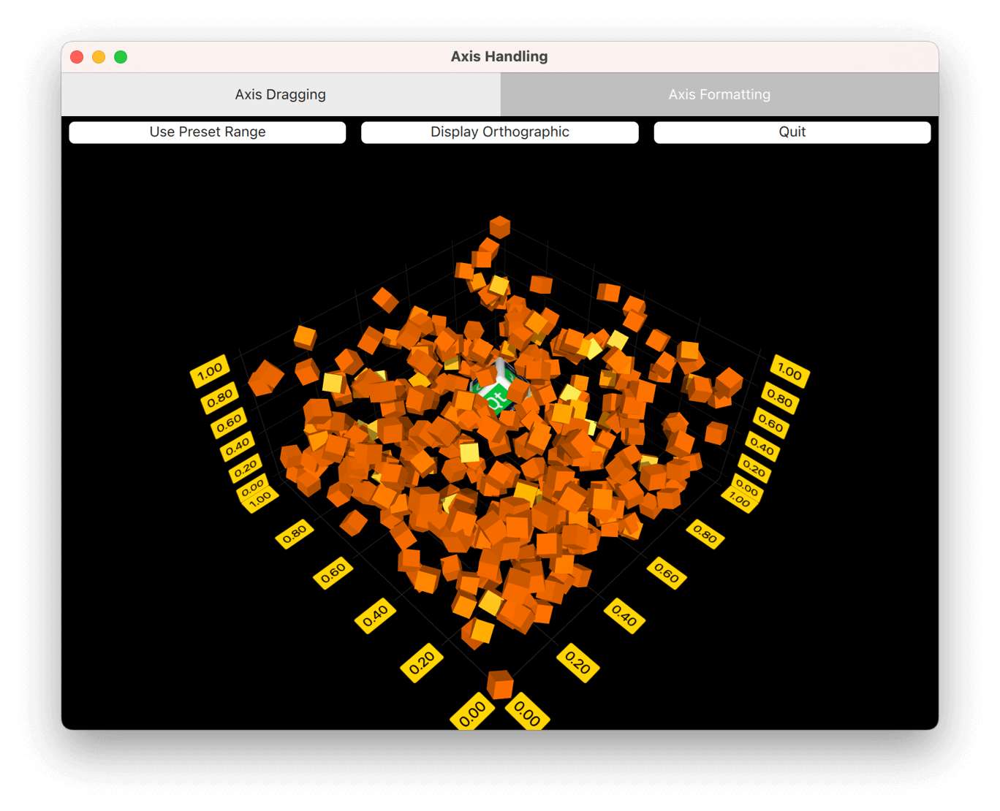

Axis Handling
Implementing axis dragging with a custom input handler in QML, and creating a custom axis formatter.
Axis Handling demonstrates two different custom features with axes. The features have their own tabs in the application.
The following sections concentrate on those features only and skip explaining the basic functionality - for more detailed QML example documentation, see Simple Scatter Graph.

Running the Example
To run the example from Qt Creator, open the Welcome mode and select the example from Examples. For more information, visit Building and Running an Example.
Axis Dragging
In the Axis Dragging tab, implement a custom input handler in QML that enables you to drag axis labels to change axis ranges. Further, use orthographic projection and dynamically update the properties of a custom item.
Overriding Default Input Handling
To deactivate the default input handling mechanism, set the active input handler of Scatter3D graph to null:
Scatter3D { id: scatterGraph inputHandler: null ...
Then, add a MouseArea and set it to fill the parent, which is the same Item our scatterGraph is contained in. Also, set it to accept only left mouse button presses, as in this example the other buttons are not needed:
MouseArea { anchors.fill: parent hoverEnabled: true acceptedButtons: Qt.LeftButton ...
Then, listen to mouse presses, and when caught, send a selection query to the graph:
onPressed: (mouse)=> { scatterGraph.scene.selectionQueryPosition = Qt.point(mouse.x, mouse.y); }
The onPositionChanged signal handler catches the current mouse position that will be needed for move distance calculation:
onPositionChanged: (mouse)=> { currentMouseX = mouse.x; currentMouseY = mouse.y; ...
At the end of onPositionChanged, save the previous mouse position for move distance calculation that will be introduced later:
... previousMouseX = currentMouseX; previousMouseY = currentMouseY; }
Translating Mouse Movement to Axis Range Change
In scatterGraph, listen to onSelectedElementChanged. The signal is emitted after the selection query has been made in the onPressed of the inputArea. Set the element type into a property you defined (property int selectedAxisLabel: -1) in the main component, since it is of a type you are interested in:
onSelectedElementChanged: { if (selectedElement >= AbstractGraph3D.ElementAxisXLabel && selectedElement <= AbstractGraph3D.ElementAxisZLabel) { selectedAxisLabel = selectedElement; } else { selectedAxisLabel = -1; } }
Then, back in the onPositionChanged of inputArea, check if a mouse button is pressed and if you have a current axis label selection. If the conditions are met, call the function that does the conversion from mouse movement to axis range update:
... if (pressed && selectedAxisLabel != -1) axisDragView.dragAxis(); ...
The conversion is easy in this case, as the camera rotation is fixed. You can use some precalculated values, calculate mouse move distance, and apply the values to the selected axis range:
function dragAxis() { // Do nothing if previous mouse position is uninitialized if (previousMouseX === -1) return; // Directional drag multipliers based on rotation. Camera is locked to 45 degrees, so we // can use one precalculated value instead of calculating xx, xy, zx and zy individually var cameraMultiplier = 0.70710678; // Calculate the mouse move amount var moveX = currentMouseX - previousMouseX; var moveY = currentMouseY - previousMouseY; // Adjust axes switch (selectedAxisLabel) { case AbstractGraph3D.ElementAxisXLabel: var distance = ((moveX - moveY) * cameraMultiplier) / dragSpeedModifier; // Check if we need to change min or max first to avoid invalid ranges if (distance > 0) { scatterGraph.axisX.min -= distance; scatterGraph.axisX.max -= distance; } else { scatterGraph.axisX.max -= distance; scatterGraph.axisX.min -= distance; } break; case AbstractGraph3D.ElementAxisYLabel: distance = moveY / dragSpeedModifier; // Check if we need to change min or max first to avoid invalid ranges if (distance > 0) { scatterGraph.axisY.max += distance; scatterGraph.axisY.min += distance; } else { scatterGraph.axisY.min += distance; scatterGraph.axisY.max += distance; } break; case AbstractGraph3D.ElementAxisZLabel: distance = ((moveX + moveY) * cameraMultiplier) / dragSpeedModifier; // Check if we need to change min or max first to avoid invalid ranges if (distance > 0) { scatterGraph.axisZ.max += distance; scatterGraph.axisZ.min += distance; } else { scatterGraph.axisZ.min += distance; scatterGraph.axisZ.max += distance; } break; } }
For a more sophisticated conversion from mouse movement to axis range update, see Graph Gallery.
Other Features
The example also demonstrates how to use orthographic projection and how to update properties of a custom item on the fly.
Orthographic projection is very simple. You'll just need to change the orthoProjection property of scatterGraph. The example has a button for toggling it on and off:
Button { id: orthoToggle width: axisDragView.portraitMode ? parent.width : parent.width / 3 text: "Display Orthographic" anchors.left: axisDragView.portraitMode ? parent.left : rangeToggle.right anchors.top: axisDragView.portraitMode ? rangeToggle.bottom : parent.top onClicked: { if (scatterGraph.orthoProjection) { text = "Display Orthographic"; scatterGraph.orthoProjection = false; // Orthographic projection disables shadows, so we need to switch them back on scatterGraph.shadowQuality = AbstractGraph3D.ShadowQualityMedium } else { text = "Display Perspective"; scatterGraph.orthoProjection = true; } } }
For custom items, add one to the customItemList of scatterGraph:
customItemList: [ Custom3DItem { id: qtCube meshFile: ":/qml/qmlaxishandling/cube.obj" textureFile: ":/qml/qmlaxishandling/cubetexture.png" position: Qt.vector3d(0.65, 0.35, 0.65) scaling: Qt.vector3d(0.3, 0.3, 0.3) } ]
You implement a timer to add, remove, and rotate all the items in the graph, and use the same timer for rotating the custom item:
onTriggered: { rotationAngle = rotationAngle + 1; qtCube.setRotationAxisAndAngle(Qt.vector3d(1, 0, 1), rotationAngle); ...
Axis Formatters
In the Axis Formatter tab, create a custom axis formatter. It also illustrates how to use predefined axis formatters.
Custom Axis Formatter
Customizing axis formatters requires subclassing the QValue3DAxisFormatter, which cannot be done in QML code alone. In this example, the axis interprets the float values as a timestamp and shows the date in the axis labels. To achieve this, introduce a new class called CustomFormatter, which subclasses the QValue3DAxisFormatter:
class CustomFormatter : public QValue3DAxisFormatter { ...
Since float values of a QScatter3DSeries cannot be directly cast into QDateTime values due to difference in data width, some sort of mapping between the two is needed. To do the mapping, specify an origin date for the formatter and interpret the float values from the QScatter3DSeries as date offsets to that origin value. The origin date is given as a property:
Q_PROPERTY(QDate originDate READ originDate WRITE setOriginDate NOTIFY originDateChanged)
For the mapping from value to QDateTime, use the valueToDateTime() method:
QDateTime CustomFormatter::valueToDateTime(qreal value) const { return m_originDate.startOfDay().addMSecs(qint64(oneDayMs * value)); }
To function as an axis formatter, CustomFormatter needs to reimplement some virtual methods:
virtual QValue3DAxisFormatter *createNewInstance() const; virtual void populateCopy(QValue3DAxisFormatter ©) const; virtual void recalculate(); virtual QString stringForValue(qreal value, const QString &format) const;
The first two are simple, just create a new instance of CustomFormatter and copy the necessary data over to it. Use these two methods to create and update a cache of formatter for rendering purposes. Remember to call the superclass implementation of populateCopy():
QValue3DAxisFormatter *CustomFormatter::createNewInstance() const { return new CustomFormatter(); } void CustomFormatter::populateCopy(QValue3DAxisFormatter ©) const { QValue3DAxisFormatter::populateCopy(copy); CustomFormatter *customFormatter = static_cast<CustomFormatter *>(©); customFormatter->m_originDate = m_originDate; customFormatter->m_selectionFormat = m_selectionFormat; }
CustomFormatter does the bulk of its work in the recalculate() method, where our formatter calculates the grid, subgrid, and label positions, as well as formats the label strings. In the custom formatter, ignore the segment count of the axis and draw a grid line always at midnight. Subsegment count and label positioning is handled normally:
void CustomFormatter::recalculate() { // We want our axis to always have gridlines at date breaks // Convert range into QDateTimes QDateTime minTime = valueToDateTime(qreal(axis()->min())); QDateTime maxTime = valueToDateTime(qreal(axis()->max())); // Find out the grid counts QTime midnight(0, 0); QDateTime minFullDate(minTime.date(), midnight); int gridCount = 0; if (minFullDate != minTime) minFullDate = minFullDate.addDays(1); QDateTime maxFullDate(maxTime.date(), midnight); gridCount += minFullDate.daysTo(maxFullDate) + 1; int subGridCount = axis()->subSegmentCount() - 1; // Reserve space for position arrays and label strings gridPositions().resize(gridCount); subGridPositions().resize((gridCount + 1) * subGridCount); labelPositions().resize(gridCount); labelStrings().reserve(gridCount); // Calculate positions and format labels qint64 startMs = minTime.toMSecsSinceEpoch(); qint64 endMs = maxTime.toMSecsSinceEpoch(); qreal dateNormalizer = endMs - startMs; qreal firstLineOffset = (minFullDate.toMSecsSinceEpoch() - startMs) / dateNormalizer; qreal segmentStep = oneDayMs / dateNormalizer; qreal subSegmentStep = 0; if (subGridCount > 0) subSegmentStep = segmentStep / qreal(subGridCount + 1); for (int i = 0; i < gridCount; i++) { qreal gridValue = firstLineOffset + (segmentStep * qreal(i)); gridPositions()[i] = float(gridValue); labelPositions()[i] = float(gridValue); labelStrings() << minFullDate.addDays(i).toString(axis()->labelFormat()); } for (int i = 0; i <= gridCount; i++) { if (subGridPositions().size()) { for (int j = 0; j < subGridCount; j++) { float position; if (i) position = gridPositions().at(i - 1) + subSegmentStep * (j + 1); else position = gridPositions().at(0) - segmentStep + subSegmentStep * (j + 1); if (position > 1.0f || position < 0.0f) position = gridPositions().at(0); subGridPositions()[i * subGridCount + j] = position; } } } }
The axis labels are formatted to show only the date. However, to increase the resolution of the timestamp of the selection label, specify another property for the custom formatter to allow the user to customize it:
Q_PROPERTY(QString selectionFormat READ selectionFormat WRITE setSelectionFormat NOTIFY selectionFormatChanged)
This selection format property is used in the reimplemented stringToValue method, where the submitted format is ignored and the custom selection format substituted for it:
QString CustomFormatter::stringForValue(qreal value, const QString &format) const { Q_UNUSED(format); return valueToDateTime(value).toString(m_selectionFormat); }
To expose our new custom formatter to the QML, declare it and make it a QML module. For information about how to do this, see Surface Graph Gallery.
QML
In the QML code, define a different axis for each dimension:
axisZ: valueAxis axisY: logAxis axisX: dateAxis
The Z-axis is just a regular ValueAxis3D:
ValueAxis3D { id: valueAxis segmentCount: 5 subSegmentCount: 2 labelFormat: "%.2f" min: 0 max: 10 }
For the Y-axis, define a logarithmic axis. To make ValueAxis3D show a logarithmic scale, specify LogValueAxis3DFormatter for formatter property of the axis:
ValueAxis3D { id: logAxis formatter: LogValueAxis3DFormatter { id: logAxisFormatter base: 10 autoSubGrid: true showEdgeLabels: true } labelFormat: "%.2f" }
And finally, for the X-axis use the new CustomFormatter:
ValueAxis3D { id: dateAxis formatter: CustomFormatter { originDate: "2023-01-01" selectionFormat: "yyyy-MM-dd HH:mm:ss" } subSegmentCount: 2 labelFormat: "yyyy-MM-dd" min: 0 max: 14 }
The rest of the application consists of fairly self-explanatory logic for modifying the axes and showing the graph.